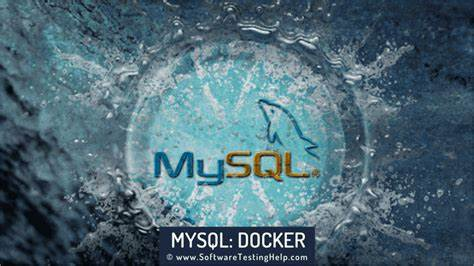

MySQL (/ˌmaɪˌɛsˌkjuːˈɛl/)[6] is an open-source relational database management system (RDBMS).[6][7] Its name is a combination of "My", the name of co-founder Michael Widenius's daughter My,[1] and "SQL", the acronym for Structured Query Language. A relational database organizes data into one or more data tables in which data may be related to each other; these relations help structure the data. SQL is a language that programmers use to create, modify and extract data from the relational database, as well as control user access to the database. In addition to relational databases and SQL, an RDBMS like MySQL works with an operating system to implement a relational database in a computer's storage system, manages users, allows for network access and facilitates testing database integrity and creation of backups.
